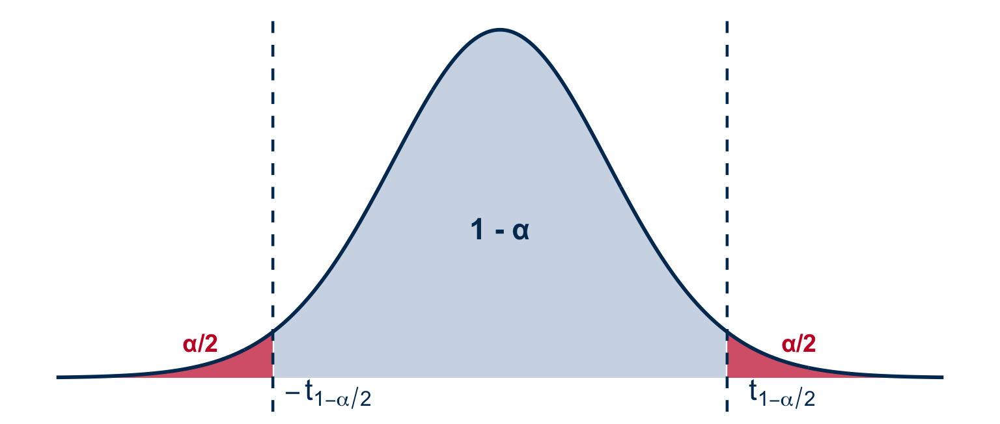

[1] 2.048407[1] 2.763262PSTAT 126: Linear Regression
UC Santa Barbara
2026-10-14
A student proposes finding the best-fitting line by minimizing \(\displaystyle\sum_{i=1}^n e_i\) instead of \(\displaystyle\sum_{i=1}^n e_i^2\). Explain why this approach fails.
Minimizing \(\sum e_i\) fails because positive and negative residuals cancel out. In fact, one of the properties of OLS residuals is that \(\sum e_i = 0\) always — so this criterion places no constraint on the line at all and cannot produce a unique fit.
Squaring the residuals:
For each scenario, state whether the primary goal is inference or prediction and justify.
(a) A researcher wants to know whether students who attend more office hours tend to earn higher exam scores, and by roughly how many points per additional visit.
→ Inference. The goal is to understand the direction and magnitude of the relationship (how many points per visit), not just produce a predicted score.
(b) An app uses a patient’s age, weight, and exercise level to estimate their resting heart rate.
→ Prediction. The goal is an accurate individual estimate — the coefficient values are not the focus.
The SLR model is \(y_i = \beta_0 + \beta_1 x_i + \varepsilon_i\).
(a) Explain the difference between the true error \(\varepsilon_i\) and the residual \(e_i\). Which one can we observe, and why?
\(\varepsilon_i\) is the true, unobservable error. It is the gap between \(y_i\) and the true line \(\beta_0 + \beta_1 x_i\).
\(e_i = y_i - \widehat{y}_i\) is the observable residual. It is the gap between \(y_i\) and the fitted line. We can compute \(e_i\) from data; \(\varepsilon_i\) requires knowing the unknown true parameters.
(b) What does it mean to say the OLS estimators are unbiased? Why is unbiasedness a desirable property?
An estimator is unbiased if its expected value equals the true parameter:
\[E(\widehat{\beta}_1) = \beta_1 \qquad E(\widehat{\beta}_0) = \beta_0\]
On average across many repeated samples, the estimates are correct.
A sports scientist records weeks of training (\(x\)) and one-mile run time in minutes (\(y\)) for \(n = 6\) runners. Given: \(\bar{x} = 7\), \(\bar{y} = 8\), \(S_{xx} = 70\), \(S_{xy} = -70\).
Compute \(\widehat{\beta}_1\) and \(\widehat{\beta}_0\). (5, 3 pts) Write the fitted equation and interpret \(\widehat{\beta}_1\) in context.
Given \(S_{xy} = -70\), \(S_{xx} = 70\), \(\bar{x} = 7\), \(\bar{y} = 8\):
\[\widehat{\beta}_1 = \frac{S_{xy}}{S_{xx}} = \frac{-70}{70} = -1 \qquad \widehat{\beta}_0 = \bar{y} - \widehat{\beta}_1\bar{x} = 8 - (-1)(7) = 15\]
Fitted model: \(\quad\widehat{\text{time}} = 15 - 1 \cdot \text{weeks}\)
Interpretation of \(\widehat{\beta}_1 = -1\): Each additional week of training is associated with a predicted reduction of 1 minute in one-mile run time, on average.
Fill in \(\widehat{y}_i\) and \(e_i\) and verify \(\sum e_i = 0\). Predict run time for a runner with 7 weeks of training.
| \(i\) | \(x_i\) | \(y_i\) | \(\widehat{y}_i = 15 - x_i\) | \(e_i\) |
|---|---|---|---|---|
| 1 | 2 | 15 | 13 | 2 |
| 2 | 4 | 11 | 11 | 0 |
| 3 | 6 | 7 | 9 | −2 |
| 4 | 8 | 5 | 7 | −2 |
| 5 | 10 | 5 | 5 | 0 |
| 6 | 12 | 5 | 3 | 2 |
\[\sum_{i=1}^6 e_i = 2 + 0 + (-2) + (-2) + 0 + 2 = 0 \checkmark\]
Q7: Predicted time at \(x = 7\) weeks: \(\quad\widehat{y} = 15 - 7 = \mathbf{8}\) minutes.
Compute RSS, \(\widehat{\sigma}^2\), and \(\widehat{\sigma}\). Interpret \(\widehat{\sigma}\) in context.
\[\text{RSS} = 2^2 + 0^2 + (-2)^2 + (-2)^2 + 0^2 + 2^2 = 16\]
\[\widehat{\sigma}^2 = \frac{\text{RSS}}{n - 2} = \frac{16}{4} = 4 \text{ min}^2 \qquad \widehat{\sigma} = 2 \text{ min}\]
The model’s predictions of one-mile run time are typically off by about 2 minutes.
By the end of today you will be able to:
Last lecture, we added the normality assumption \(\varepsilon_i \overset{iid}{\sim} N(0, \sigma^2)\), which implies:
\[Y_i \sim N(\beta_0 + \beta_1 X_i,\ \sigma^2)\]
We used MLE to show:
Today: We use the full distributional setup to derive exact distributions for \(\widehat{\beta}_0\) and \(\widehat{\beta}_1\) and build confidence intervals and hypothesis tests from them.
The OLS slope can be written as a weighted sum of the \(Y_i\)’s:
\[\widehat{\beta}_1 = \sum_{i=1}^n c_i Y_i, \qquad c_i = \frac{X_i - \bar{X}}{S_{xx}}, \quad S_{xx} = \sum_{i=1}^n (X_i - \bar{X})^2\]
Since each \(Y_i \sim N(\beta_0 + \beta_1 X_i, \sigma^2)\) and a linear combination of independent normals is normal, \(\widehat{\beta}_1\) is normal.
We previously showed: \(E(\widehat{\beta}_1) = \beta_1\) and \(\text{Var}(\widehat{\beta}_1) = \dfrac{\sigma^2}{S_{xx}}\)
\[\boxed{\widehat{\beta}_1 \sim N\!\left(\beta_1,\ \frac{\sigma^2}{S_{xx}}\right)}\]
Standardizing \(\widehat{\beta}_1\) gives a standard normal:
\[\frac{\widehat{\beta}_1 - \beta_1}{\sigma / S_{xx}^{1/2}} \sim N(0, 1)\]
The problem: \(\sigma^2\) is unknown. We replace it with \(\text{MSE} = \dfrac{\text{RSS}}{n-2}\).
Replacing a fixed constant with a random estimate inflates the tails. The result is no longer normal.
Recall from last lecture: \(T = Z / (V/k)^{1/2}\) where \(Z \sim N(0,1)\) and \(V \sim \chi^2_k\). The missing piece is showing that RSS fits the chi-squared structure in the denominator:
\[\frac{\text{RSS}}{\sigma^2} \sim \chi^2_{n-2} \quad \text{and is independent of } \widehat{\beta}_0 \text{ and } \widehat{\beta}_1\]
We have two pieces:
Write the statistic as a ratio and substitute each piece:
\[\frac{\widehat{\beta}_1 - \beta_1}{(\text{MSE}/S_{xx})^{1/2}} = \frac{\dfrac{\widehat{\beta}_1 - \beta_1}{\sigma/S_{xx}^{1/2}}}{\sqrt{\dfrac{\text{RSS}/\sigma^2}{n-2}}} = \frac{N(0,1)}{\left(\chi^2_{n-2}/(n-2)\right)^{1/2}} \sim t_{n-2}\]
The \(\sigma\)’s cancel between numerator and denominator; the \(\chi^2_{n-2}\) structure comes from RSS; and independence of RSS and \(\widehat{\beta}_1\) makes this exactly \(t_{n-2}\).
\(\alpha\) (significance level): the probability of making an error. Specifically, the probability that the interval fails to contain the true parameter. We choose \(\alpha\) before looking at the data. Common choices are \(0.05\) or \(0.01\).
A \(100(1-\alpha)\%\) CI traps the true parameter between two data-driven bounds with probability \(1-\alpha\).
Key idea: choose critical values \(\pm\, t_{1-\alpha/2}\) that leave \(\alpha/2\) in each tail.

For \(\alpha = 0.05\): critical values are \(\pm\, t_{0.975,\, n-2}\), giving a 95% CI.
\(t_{1-\alpha/2,\, n-2}\) is the value that cuts off \(\alpha/2\) in the upper tail of a \(t\)-distribution with \(n-2\) degrees of freedom.
Since \(\dfrac{\widehat{\beta}_1 - \beta_1}{(\text{MSE}/S_{xx})^{1/2}} \sim t_{n-2}\):
Step 1: Trap the expression between \(\pm\, t_{1-\alpha/2,\, n-2}\) with probability \(1-\alpha\):
Step 2: Rearrange the inequality to isolate \(\beta_1\):
Result:
Since \(\dfrac{\widehat{\beta}_1 - \beta_1}{(\text{MSE}/S_{xx})^{1/2}} \sim t_{n-2}\):
Step 1: Trap the expression between \(\pm\, t_{1-\alpha/2,\, n-2}\) with probability \(1-\alpha\):
\[P\!\left(-t_{1-\alpha/2,\, n-2} \leq \frac{\widehat{\beta}_1 - \beta_1}{(\text{MSE}/S_{xx})^{1/2}} \leq t_{1-\alpha/2,\, n-2}\right) = 1 - \alpha\]
Step 2: Multiply through by \((\text{MSE}/S_{xx})^{1/2}\) and flip signs to isolate \(\beta_1\):
\[P\!\left(\widehat{\beta}_1 - t_{1-\alpha/2,\, n-2}\left(\frac{\text{MSE}}{S_{xx}}\right)^{1/2} \;\leq\; \beta_1 \;\leq\; \widehat{\beta}_1 + t_{1-\alpha/2,\, n-2}\left(\frac{\text{MSE}}{S_{xx}}\right)^{1/2}\right) = 1 - \alpha\]
Result: A \(100(1-\alpha)\%\) confidence interval for \(\beta_1\):
\[\widehat{\beta}_1 \;\pm\; t_{1-\alpha/2,\, n-2}\left(\frac{\text{MSE}}{S_{xx}}\right)^{1/2}\]
Correct interpretation: If we repeated the study many times, \(100(1-\alpha)\%\) of the resulting intervals would contain \(\beta_1\).
Common mistake: “There is a 95% probability that \(\beta_1\) is in this interval.” — \(\beta_1\) is a fixed (unknown) constant, not random; it either is or isn’t in any given interval.
What makes the interval wider or narrower?
Practical use: If the CI for \(\beta_1\) does not contain 0, we have evidence that \(X\) is a useful linear predictor of \(Y\) at the chosen significance level.
A researcher records hours of sunlight (\(X\)) and plant height in cm (\(Y\)) for 5 seedlings:
| Plant | \(X\) | \(Y\) |
|---|---|---|
| 1 | 1 | 4 |
| 2 | 2 | 7 |
| 3 | 3 | 8 |
| 4 | 4 | 11 |
| 5 | 5 | 10 |
Pre-computed summary statistics:
\[\widehat{\beta}_1 = 1.6 \qquad S_{xx} = 10 \qquad \text{MSE} = 1.47 \qquad t_{0.975,\,3} = 3.182\]
Task: Construct a 95% confidence interval for \(\beta_1\). Does sunlight appear to be a useful predictor?
Step 1: Compute the standard error of \(\widehat{\beta}_1\):
\[\text{SE}(\widehat{\beta}_1) = \left(\frac{\text{MSE}}{S_{xx}}\right)^{1/2} = \left(\frac{1.47}{10}\right)^{1/2} \approx 0.383\]
Step 2: Apply the CI formula with \(t_{0.975,\,3} = 3.182\):
\[1.6 \;\pm\; 3.182 \times 0.383 \;=\; 1.6 \;\pm\; 1.22 \;=\; (0.38,\ 2.82)\]
Conclusion: The interval \((0.38,\ 2.82)\) does not contain 0, so at \(\alpha = 0.05\) there is evidence that sunlight is a useful linear predictor of plant height.
To test \(H_0: \beta_1 = \beta_{10}\) (some fixed value), compute:
\[t^* = \frac{\widehat{\beta}_1 - \beta_{10}}{(\text{MSE}/S_{xx})^{1/2}}\]
Under \(H_0\), \(t^* \sim t_{n-2}\).
Decision rules at significance level \(\alpha\):
| Hypotheses | Reject \(H_0\) if |
|---|---|
| \(H_1: \beta_1 \neq \beta_{10}\) (two-sided) | \(|t^*| > t_{1-\alpha/2,\, n-2}\) |
| \(H_1: \beta_1 > \beta_{10}\) (right-sided) | \(t^* > t_{1-\alpha,\, n-2}\) |
| \(H_1: \beta_1 < \beta_{10}\) (left-sided) | \(t^* < -t_{1-\alpha,\, n-2}\) |
\(Y\) is independent of \(X\) if and only if \(\beta_1 = 0\). Testing \(H_0: \beta_1 = 0\) asks: does \(X\) have any linear relationship with \(Y\) at all?
\[t^* = \frac{\widehat{\beta}_1}{(\text{MSE}/S_{xx})^{1/2}} = \frac{\widehat{\beta}_1}{\text{SE}(\widehat{\beta}_1)}\]
This is exactly what R reports under summary(lm(...)):
The t value column is \(\widehat{\beta}/\text{SE}(\widehat{\beta})\). The Pr(>|t|) column is the two-sided \(p\)-value. A small \(p\)-value is evidence against \(H_0: \beta_1 = 0\).
Using the same sunlight–plant height data (\(n = 5\), \(\widehat{\beta}_1 = 1.6\), \(S_{xx} = 10\), \(\text{MSE} = 1.47\)):
Task: Test \(H_0: \beta_1 = 0\) vs. \(H_1: \beta_1 \neq 0\) at \(\alpha = 0.05\).
Step 1: Compute the test statistic:
\[t^* = \frac{\widehat{\beta}_1}{(\text{MSE}/S_{xx})^{1/2}} = \frac{1.6}{0.383} \approx 4.18\]
Step 2: Compare to the critical value \(t_{0.975,\,3} = 3.182\):
\[|t^*| = 4.18 > 3.182\]
Reject \(H_0\).
Conclusion: At \(\alpha = 0.05\), there is sufficient evidence that sunlight has a linear relationship with plant height (\(p < 0.05\)).
A nutritionist believes that each additional gram of daily protein intake increases resting metabolic rate by more than 2 calories/day. She fits a regression on \(n = 20\) participants and obtains \(\widehat{\beta}_1 = 2.8\), \(S_{xx} = 500\), \(\text{MSE} = 9\).
Task: Test \(H_0: \beta_1 = 2\) vs. \(H_1: \beta_1 > 2\) at \(\alpha = 0.05\).
Step 1: Compute \(\text{SE}(\widehat{\beta}_1) = (\text{MSE}/S_{xx})^{1/2} = (9/500)^{1/2} \approx 0.134\)
\[t^* = \frac{\widehat{\beta}_1 - \beta_{10}}{(\text{MSE}/S_{xx})^{1/2}} = \frac{2.8 - 2}{0.134} \approx 5.97\]
Step 2: Right-sided test — compare to \(t_{0.95,\,18} = 1.734\):
\[t^* = 5.97 > 1.734 \quad \Rightarrow \quad \text{Reject } H_0\]
Conclusion: At \(\alpha = 0.05\), there is sufficient evidence that each additional gram of protein increases metabolic rate by more than 2 calories/day.
An engineer claims a new insulation material reduces heat loss by fewer than 3 watts per cm of thickness. A regression on \(n = 15\) panels gives \(\widehat{\beta}_1 = -2.1\), \(S_{xx} = 200\), \(\text{MSE} = 4\).
Task: Test \(H_0: \beta_1 = -3\) vs. \(H_1: \beta_1 > -3\) at \(\alpha = 0.05\).
Step 1: Compute \(\text{SE}(\widehat{\beta}_1) = (4/200)^{1/2} = 0.141\)
\[t^* = \frac{-2.1 - (-3)}{0.141} = \frac{0.9}{0.141} \approx 6.38\]
Step 2: Right-sided test — compare to \(t_{0.95,\,13} = 1.771\):
\[t^* = 6.38 > 1.771 \quad \Rightarrow \quad \text{Reject } H_0\]
Conclusion: At \(\alpha = 0.05\), there is sufficient evidence that heat loss reduction per cm is less than 3 watts (i.e., the slope is greater than \(-3\)).
Since \(\widehat{\beta}_0 = \bar{Y} - \widehat{\beta}_1 \bar{X}\), it is also a linear combination of the \(Y_i\)’s, so it is normal.
We previously showed: \(E(\widehat{\beta}_0) = \beta_0\) and \(\text{Var}(\widehat{\beta}_0) = \sigma^2\!\left(\dfrac{1}{n} + \dfrac{\bar{X}^2}{S_{xx}}\right)\)
\[\boxed{\widehat{\beta}_0 \sim N\!\left(\beta_0,\ \sigma^2\!\left(\frac{1}{n} + \frac{\bar{X}^2}{S_{xx}}\right)\right)}\]
Step 1: Standardize \(\widehat{\beta}_0\) using its known variance \(\sigma^2\!\left(\dfrac{1}{n} + \dfrac{\bar{X}^2}{S_{xx}}\right)\):
\[\frac{\widehat{\beta}_0 - \beta_0}{\sigma\left(\dfrac{1}{n} + \dfrac{\bar{X}^2}{S_{xx}}\right)^{1/2}} \sim N(0, 1)\]
Step 2: \(\sigma^2\) is unknown. Replace it with \(\text{MSE} = \text{RSS}/(n-2)\). Since \(\text{RSS}/\sigma^2 \sim \chi^2_{n-2}\) and is independent of \(\widehat{\beta}_0\):
\[\frac{\widehat{\beta}_0 - \beta_0}{\left[\text{MSE}\!\left(\dfrac{1}{n} + \dfrac{\bar{X}^2}{S_{xx}}\right)\right]^{1/2}} = \frac{N(0,1)}{\left(\chi^2_{n-2}/(n-2)\right)^{1/2}} \sim t_{n-2}\]
Step 3: A \(100(1-\alpha)\%\) confidence interval for \(\beta_0\):
\[\widehat{\beta}_0 \;\pm\; t_{1-\alpha/2,\, n-2}\left[\text{MSE}\!\left(\frac{1}{n} + \frac{\bar{X}^2}{S_{xx}}\right)\right]^{1/2}\]
Hypothesis tests work exactly as they do for \(\beta_1\).
Using mpg ~ wt from mtcars: \(\widehat{\beta}_0\) is the predicted mpg when weight = 0.
Estimate Std. Error t value Pr(>|t|)
(Intercept) 37.285126 1.877627 19.857575 8.241799e-19
wt -5.344472 0.559101 -9.559044 1.293959e-1095% CI for \(\beta_0\):
Interpretation: We are 95% confident that \(\beta_0 \in (33.4,\ 41.1)\).
However, a car with weight = 0 is physically impossible. The intercept here is a mathematical anchor for the fitted line, not a practically meaningful quantity. Interpret with caution when \(X = 0\) is outside the data range.
2.5 % 97.5 %
(Intercept) 33.450500 41.119753
wt -6.486308 -4.202635summary(lm(...)) are exactly this testPSTAT 126 — Fall 2026 · UC Santa Barbara